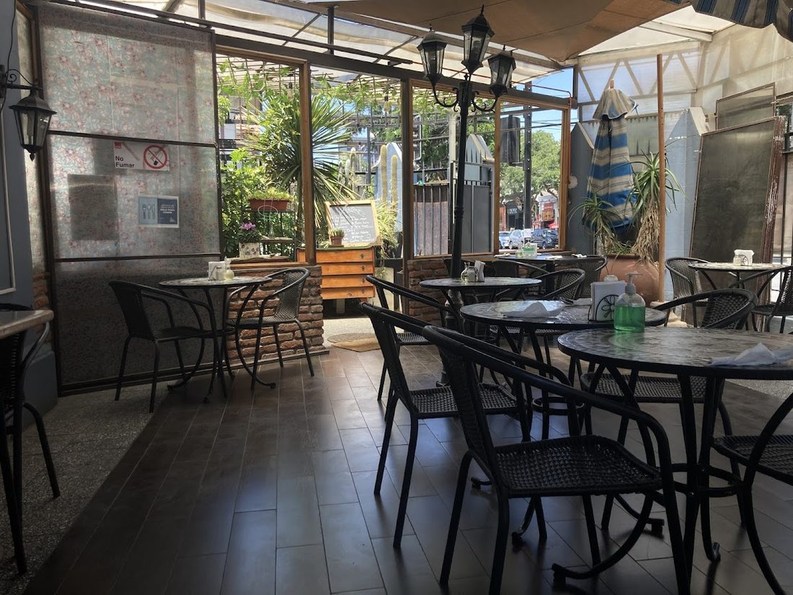
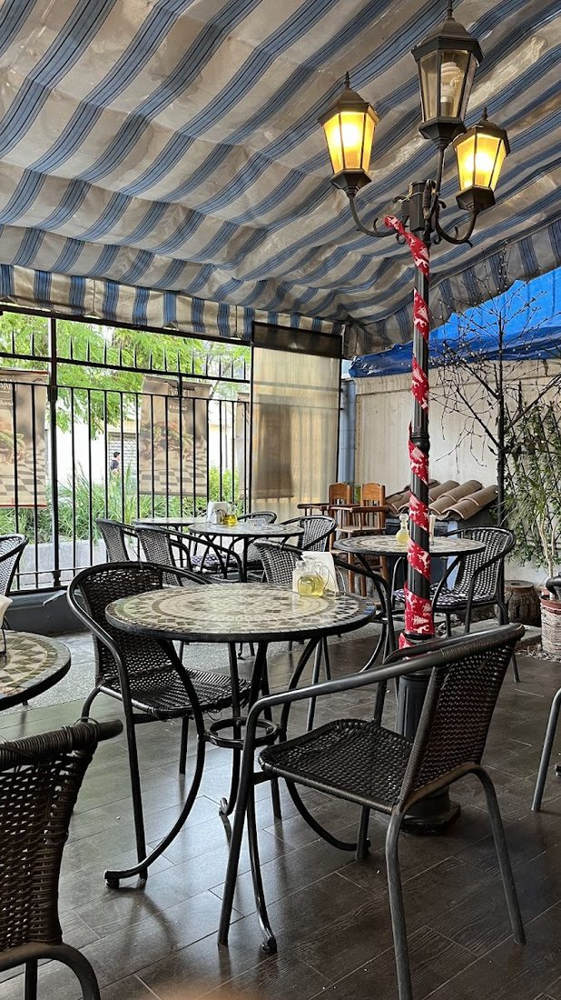
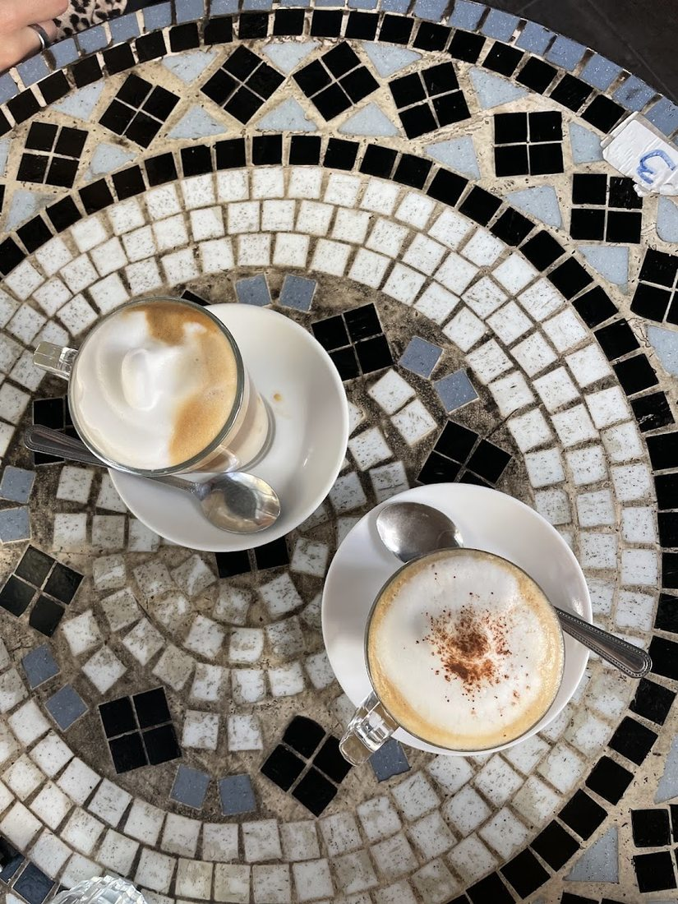
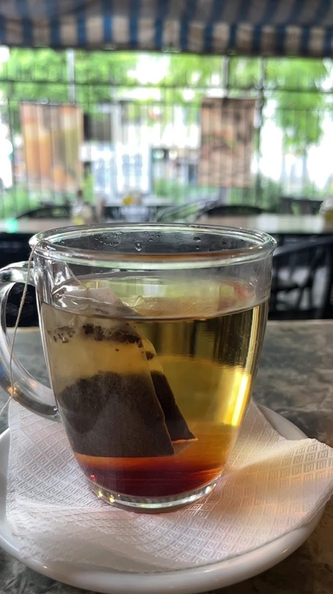
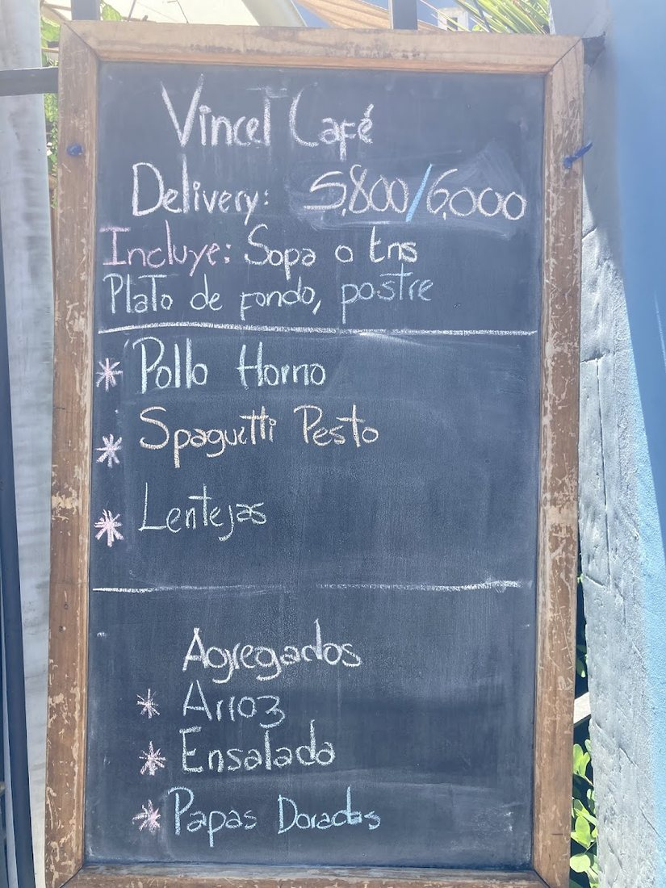

★★★★★
"Excelente restaurante, comida deliciosa al estilo chileno, variado menú con una gran relación precio calidad, emplazado en un entorno hermoso de un gran barrio, 100% recomendable."

Menú ejecutivo casero, buen café, muy buena selección de té y esa sensación de fonda de barrio que ya casi no se encuentra — abierto los 7 días, desde 2020 en la misma esquina de Seminario.
Café Vincent funciona en Seminario 64, a una cuadra del Parque Bustamante, con una terraza cubierta llena de plantas, faroles y mesas de mosaico — el tipo de lugar donde la gente del barrio llega, se sienta y se queda. Las reseñas reales de Google lo describen una y otra vez con las mismas palabras: acogedor, buena atención, ambiente agradable.
La base es un menú ejecutivo del día — sopa o ensalada, plato de fondo y postre — con opciones caseras como pollo al horno, spaghetti al pesto, charquicán con huevo o zapallito relleno. El café es bueno, la selección de té sorprende para ser una cafetería de barrio, y en invierno prenden la estufita más cercana a tu mesa. Eso sí: solo efectivo o transferencia, no reciben tarjeta.




"Excelente restaurante, comida deliciosa al estilo chileno, variado menú con una gran relación precio calidad, emplazado en un entorno hermoso de un gran barrio, 100% recomendable."
"En total honestidad, llegué por accidente al lugar… de pronto, me hallé dentro de un lugar tibio, con aroma a pesto recién hecho y con música de los…"
"Rico el café y la tarta. Agradable lugar. Amable el personal. Abren temprano. Prendieron la estufita más cercana a la mesa donde me senté. Bkn."
Seminario 64, Providencia, Región Metropolitana
Todos los días, 9:00 a 21:00h
Solo efectivo o transferencia — no reciben tarjeta (confirmado en varias reseñas reales de clientes).